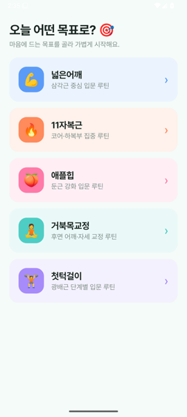
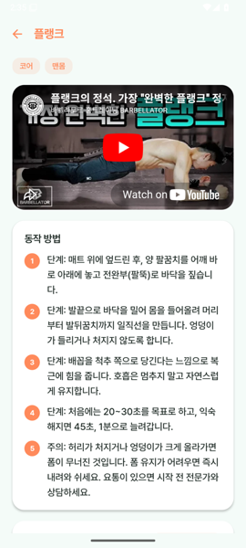

대표 제품과 운영·실험 제품을 한곳에 모았습니다. 각 카드는 제품명, 상태, 해결 문제, 다음 행동 순서로 읽히도록 정리했습니다.
운동 기록과 건강 데이터를 한곳에 모아, 다음 행동을 더 쉽게 정하는 개인 건강 코칭 도구입니다.
수경시설 업무를 더 빠르게 정리하는 현장형 도구입니다.
한 주의 상태를 짧게 돌아보고 결과를 확인하는 정적 웹 체크인입니다.
흩어진 건강 데이터를 해석해 사용자가 오늘 할 일을 더 쉽게 고르도록 돕는 베타 제품입니다.
아이 속도에 맞춰 질문하고, AI가 말한 내용을 스스로 확인하는 습관까지 다루는 교육 도구입니다.
전화와 현장 기록을 작업일보 초안으로 정리해, 현장 운영의 누락을 줄이는 자동화 도구입니다.
각 제품 라인에서 실제로 일어난 진행 상황을 그대로 올립니다.
무료 셀프PT 앱으로 운동 기록을 시작하고, 베타 멤버에게는 워치·인바디·식단 사진을 연결한 카카오톡 AI 코칭을 순차 제공할 예정입니다.
갤럭시워치·가민·인바디·식단 사진 중 2개 이상을 쓰고 있지만, 매일 무엇을 해야 할지 애매한 분.
초기 베타는 약 30명 규모로 운영합니다. 기록 연결, 아침 코칭, 주간 리포트 반응을 같이 봅니다.
목표별 루틴과 세트 기록은 무료로 시작합니다. 통합 AI 코칭은 베타 멤버부터 순차 적용합니다.
채널 추가 후 "베타 신청"이라고 보내주세요. 기기 종류와 운동 목표를 확인한 뒤 안내드립니다.
가민·갤럭시워치 계정을 한 번 연결하면 운동·수면·심박이 자동으로 모입니다.
밥 먹을 때 한 장, 인바디 잴 때 한 장. 나머지 기록은 전부 자동입니다.
체중·근육·수면·식단을 함께 읽습니다. 숫자 하나로 겁주지 않습니다.
매일 아침 카카오톡으로. "오늘 뭘 하면 되는지"만 정확하게.
"넓은 어깨" "11자 복근" "달리기 빨라지기"처럼 10가지 목표 중에서 고르면 입문 루틴과 동작 영상을 받습니다. PT 없이도 혼자, 정확하게. 세트를 기록하면 워치·인바디·식단과 함께 카카오톡 코칭으로 이어집니다.


AI 헬스코치는 약 30명 규모의 비공개 베타로 시작합니다. 본 서비스는 의료기기가 아니며, 진단·치료 목적의 조언을 제공하지 않습니다. 건강 데이터는 사용자가 요청한 코칭 인사이트 제공 목적으로만 사용됩니다.
운동·수면·심박·체성분·식단 사진. 사용자가 직접 연결하거나 업로드한 데이터만 수집하며, 가민 연동은 공식 Health API의 사용자 동의 절차를 따릅니다.
건강 데이터를 판매하거나 광고에 활용하지 않으며, 제3자에게 제공하지 않습니다. 코칭 외 목적으로 사용하지 않습니다.
JYLAB은 AI와 자동화로 일상의 문제를 푸는 1인 제품 스튜디오입니다. 직접 쓰려고 만든 도구가 충분히 좋아졌을 때, 제품으로 내놓습니다.
AI 헬스코치도 그렇게 시작했습니다. 매일 아침 러닝과 인바디와 식단 사이에서 길을 잃던 한 사람의 기록 자동화가, 같은 문제를 가진 모두의 코치가 되는 중입니다.
원칙
기록은 자동으로, 해석은 데이터로, 결론은 한 줄로. 건강 데이터는 민감정보로 취급하며 수집 최소화·목적 제한 원칙을 지킵니다.
연락처
제휴·문의: jaeyoon1725@gmail.com